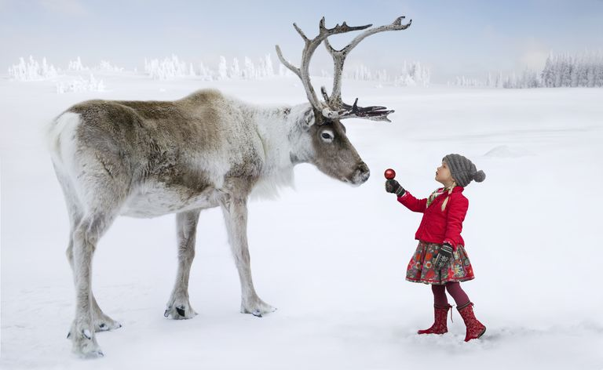

The elf to the right is Dasher's groomer. This elf's name is Declan MacLeod from Northen Highlands of Ireland. He comes from the land where Elf Folk live is called AlFheim, land of the light elves. He was born in 1290 in the middle of winter. His father was non-elven and his mother was an Elf. His mother had to leave because she missed her homeland, but she left her son a winter jacket so he could remember her.
The Reindeer on the left is Mr. Dasher.He's one of Santa's reindeer who help guide his sleigh through out the night. Dasher's father was the most famous Reindeer to run from the Artic - Mountains to the edge of the Artic - Tundra to the nearest lake. His mother was raised near the mountains of the artic.

from the left to right : the Reindeer on the left is Ms.Vixen. She is one of the reindeer who is playful and loves having a great time with small childern. She is also quite charming and foxy, she uses her tricks to help Santa when he forgets a Christmas gift. She loves to make everyone laugh and she's really witty and easy-going.
The elf on the right is Mrs.Silvana O'Malley. She comes from the land of the thistle ( Scottland ), her father was left was never in her life. Her mother gave birth to a daughter in the woodland of Scottland near a little brook. Her mother raised her near the ocean and Silvanna saw a reindeer that belong to Santa. The reindeer was Ms. Vixen, she saw something that made her feel sorry for the little girl. Santa saw Silvana and asked if she wanted to work for him. Silvana told her mother and she went to go work Mr.Claus.